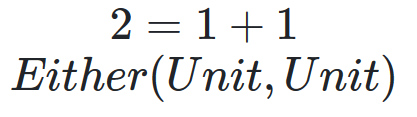

Disclaimer
This is short synopsis of great set of lectures. What is written here is by no means true, one should refer to original lectures or some books etc. This is written mostly for myself in case I wanted to revisit the topic in the future. Everything below is not “what it is” but mostly “how I understood that”. So, there might be mistakes and so on.
Category
Category consists of:
-
objects / dots (a, b, c, …)
-
morphisims / arrows (f, g, …).
 morphism from a into b, connects two objects
morphism from a into b, connects two objects
- composition
apply g after f
And should:
- be associative:
 Order of composition doesn’t matter
Order of composition doesn’t matter
- have identity morphism
There is an arrow to itself
Category examples
Category 0 (empty)
-
no objects
-
no morphisms
Category 1 (singleton)
-
1 object
-
1 identity morphism
Category with 2 objects and 1 morphism
-
2 objects
-
1 morphism from one object to another
-
2 identity morphisms
 Applying identity morphisms to any morphism is equivalent to that morphism itself
Applying identity morphisms to any morphism is equivalent to that morphism itself
Universal construction
-
identify pattern
-
define ranking
-
define best
Iso- / mono- / epi- morphisms
Isomorphism
 f is isomorfism
f is isomorfism
Isomorphic implies inverse morphism
Injective / monic / monomorphism
 f is monomorphism
f is monomorphism


Surjective / epic / epimorphism

Order relation
Hom-set — set of all arrows from a to b.
Pre-order
Hom-set is either empty or singleton. Can contain loops.
Example: “less or equal” order relation.
 All these arrows can hold, and there is a loop between a and b
All these arrows can hold, and there is a loop between a and b
Partial order
Pre-order without loops.
Example: “less” order relation.
Total order
All objects have relations
Monoid
Category with 1 object and many morphisms from that object to itself.
Hom-set: M(m, m) — set of all arrows.
Terminal and initial objects
Terminal object — object to which there is arrow from any other object in category.
Initial object — object from which there is an arrow to any other object in category.
Opposite category is a category with “reversed arrows”. Terminal object is initial in opposite category.

Product

c is a better product than c’ (in terms of order relation)
p, q — projections
Product in programming is a Pair:
data class Pair<A : Any, B : Any>(
val fst: A,
val snd: B
)
Sum (Co-Product)
Similar to Product, with reversing arrows

i, j — injections

In programming it can be described as Either:
class Either<A: Any, B: Any>
private constructor(private val a: A?, private val b: B?) {
companion object {
fun <A: Any, B: Any> left(a: A): Either<A, B> {
return Either(a, null)
}
fun <A: Any, B: Any> right(b: B): Either<A, B> {
return Either(null, b)
}
}
}
Algebraic Data Types
Product
- symmetry

- associativity

- identity
Sum
- symmetry
- associativity

- identity
Product and Sum
- distribution

- annihilation
Semiring
With defined product and sum (without inverse operations) we get Semiring.
Example 1 Boolean

Example 2 Option
Example 3 List
Functor
Functor — mapping from one category to another with preserving structure. Objects are mapped into objects, morphisms into morphisms. Preserving structure means that composition and identity is preserved.
Functor can be though as a container.

Special Types of Functors
-
Faithful — injective on all hom-sets
-
Full — surjective on all hom-sets
-
Constant Δc — functor which maps all objects into single object c and all morphisms into single morphism idc
-
Endofunctor — functor from one category to the same category
Example 1 Option
- mapping objects

- mapping morphisms

- preserve identity

- preserve composition

Example 2 List
- mapping objects
Functor in programming
interface Functor<A> {
fun <B> map(f: (A) -> B): Functor<B>
}
BiFunctor
Cat
Cat — category of categories
-
objects are categories
-
morphisms are functors
Product Category

BiFunctor
BiFunctor is mapping from product category into another category.

Sum is also a BiFunctor
BiFunctor in programming
interface Bifunctor<A : Any, B: Any> {
fun <C : Any> first(f: (A) -> C): Bifunctor<C, B>
fun <D : Any> second(f: (B) -> D): Bifunctor<A, D>
fun <C : Any, D : Any> bimap(f: (A) -> C, g: (B) -> D): Bifunctor<C, D>
}
ProFunctor
ADT construction via composition
Constant Functor
data class Const<C : Any, A : Any>(val c: C): Functor<A> {
override fun <B : Any> fmap(f: (A) -> B): Const<C, B> {
return Const<C, B>(c)
}
}
Identity Functor
data class Just<A : Any>(val a: A) : Functor<A> {
override fun <B : Any> fmap(f: (A) -> B): Just<B> {
return Just(f(a))
}
}
Maybe via composition
class Maybe<A> = Either(Const<Unit, A>, Identity<A>)
Either is a BiFunctor, Const and Identity are Functors.
ProFunctor
ProFunctor — mapping from product of category with its opposite category to that category.

interface Contravariant<A : Any> {
fun <B : Any> contramap(f: (B) -> A): Contravariant<B>
}
ProFunctor in programming
interface Profunctor<A : Any, B : Any> {
fun <C : Any> lmap(f: (C) -> A): Profunctor<C, B>
fun <D : Any> rmap(f: (B) -> D): Profunctor<A, D>
fun <C : Any, D : Any> dimap(f: (C) -> A, g: (B) -> D): Profunctor<C, D>
}
Functions/exponentials
Currying

fun <A, B, C> curry(f: (Pair<A, B>) -> C): (A) -> ((B) -> C)
fun <A, B, C> uncurry(f: (A) -> ((B) -> C)): (Pair<A, B>) -> C
Cartesian Closed Category (CCC)
Category is CCC if it has:
-
product
-
exponential
-
terminal object
Exponential

Examples

Proposition of types / Curry-Howard-Lambok isomorphism

Natural transformation
Natural transformation — mapping between Functors (or objects to morphisms).
 Naturality square
Naturality square
Natural transformation is isomorphic if all components are isomorphic.
Naturatlity condition
Natural transformation in programming
NT in programming is polymorphic function.

Example
fun <A> List<A>.head(): Option<A> {
return if (this.isEmpty()) None else Just(this.first())
}
// list.fmap().head() == list.head().fmap()
Reversing order of function application can be used in optimizations.
Intuition
Functor — map container contents
Natural transformation — map container
Naturality condition says that it doesn’t matter what to do first and what second: map container or map container contents.
Examples of Natural Transformations

Monad
Monad — Monoid in category of endofunctors
 Monoid
Monoid
Monoid object in category [C, C] (category of endofunctors) is a Monad
Applicative
Applicative is a functor with:

Monad
Monad is Applicative with:

Other functions:

Final words
Lectures were great, a lot of insides on the how world is constructed, how other math disciplines are based on these very high-level thoughts. And how all of this is related to programming, which is for sure a computer science.
To make a bit of a practice made few implementations of things which were an examples throughout the course. For sure, implementation is not that great, but it is in Kotlin which is more functional than Java (but not that as Scala or Haskell). Implementations are just examples and have no real usage. If one is interested in better implementations I think it is good to take a look at arrow-kt.
Happy coding